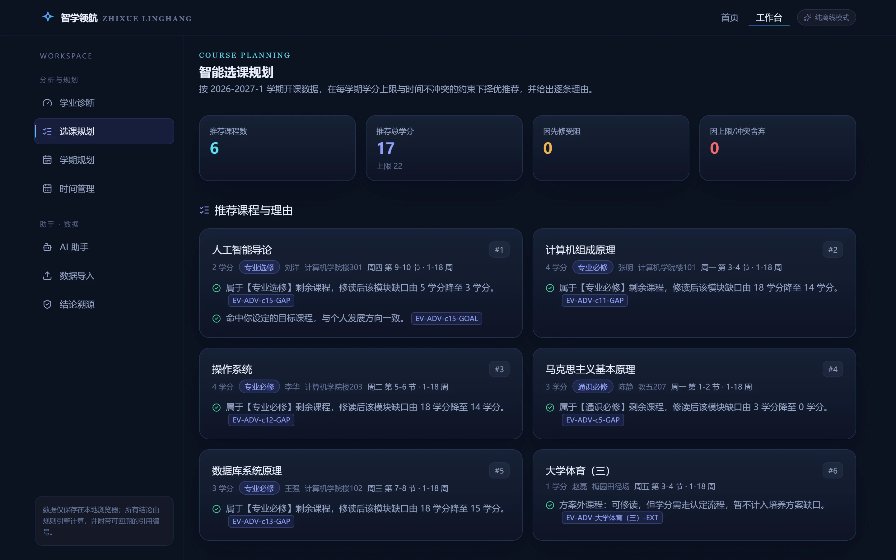
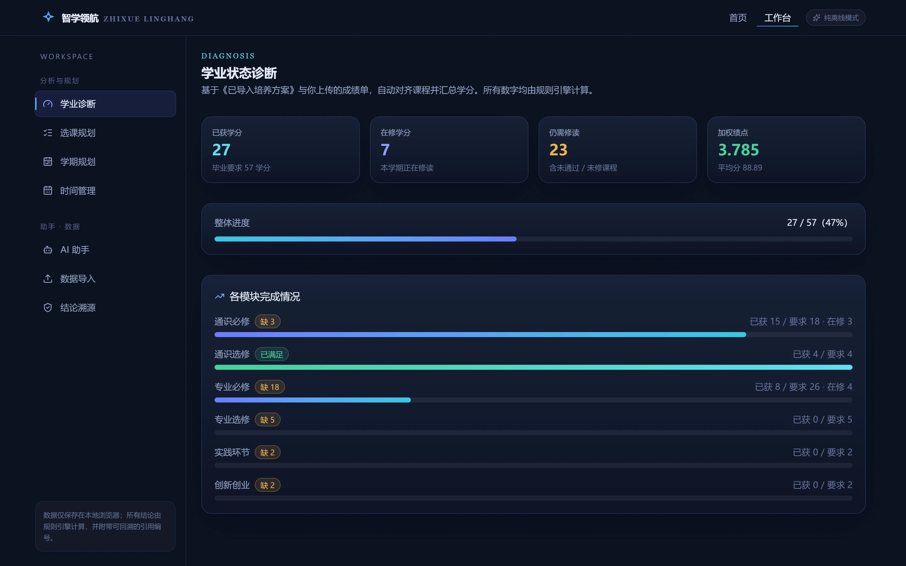
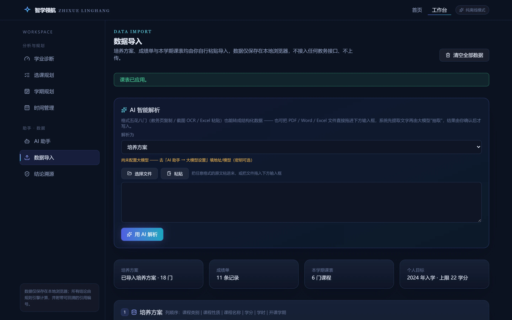
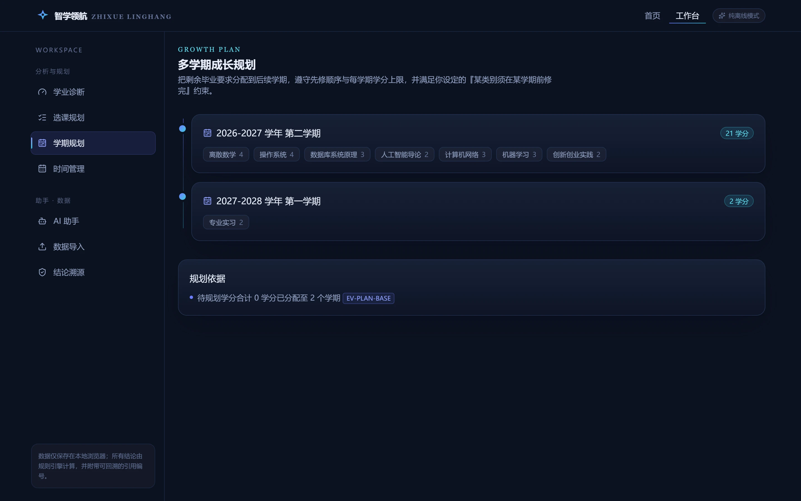
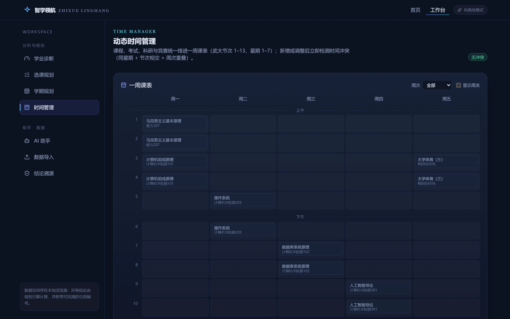
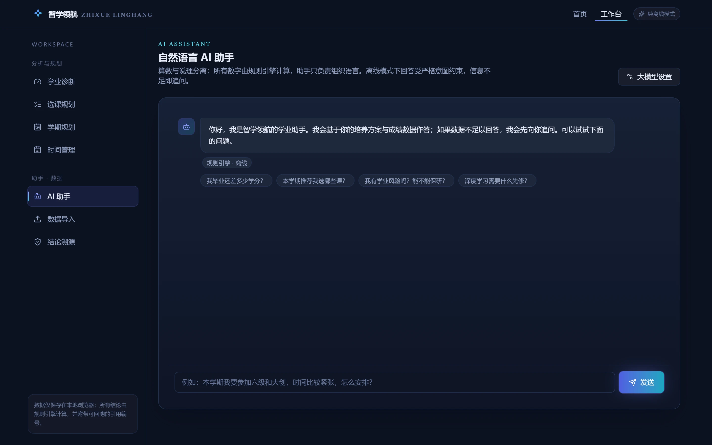
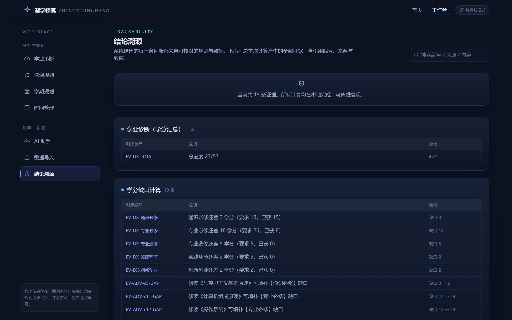

学业状态诊断
汇总已修学分、课程门类与培养方案要求，给出学业进度、结构性缺口与风险提示，先看清「现在站在哪里」。
- 进度评估
- 缺口识别
- 风险提示
CORE CAPABILITIES
从一个专业、一个学期，到整个培养周期——每一层能力都建立在可核对的规则计算之上。
汇总已修学分、课程门类与培养方案要求，给出学业进度、结构性缺口与风险提示，先看清「现在站在哪里」。
结合先修关系、开课学期与个人目标生成选课方案，并为每一门课给出可阅读的推荐理由，而不只是一个列表。
把剩余的毕业要求与个人目标拆分到未来各个学期，形成一条可持续执行、随时可复盘的成长路径。
当课表或成绩发生变化时实时检测时间冲突与容量冲突，给出调整建议，让计划始终跟着现实滚动更新。
用日常语言提问即可完成查询与规划；一旦信息不足便主动追问澄清，避免在依据缺失时给出结论。
PRODUCT TOUR
以下全部是真实运行的界面（演示样例数据）。从导入到诊断、规划、时间管理，每一步的计算结果都由规则引擎得出，并可回溯到具体依据。







无需安装，直接在浏览器里导入自己的培养方案与成绩，数据只留在本机。
HOW IT WORKS
数据进入、规则计算、方案生成、依据解释——四个环节各司其职，中间结果始终可被检查。
读取培养方案与已修课程信息，并完整保存在本机浏览器中，作为后续计算的唯一数据来源。
由规则引擎计算学分构成、先修关系与开课约束，得到确定性的中间结果，全程不依赖模型的自由发挥。
以中间结果与个人目标为前提，生成选课方案与多学期规划，并对每门课程给出推荐理由。
每一条建议都附上依据，可回溯到具体的规则条目与数据字段，方便逐条核对。
DATA & PRIVACY
学业数据是高度私人的信息。这里的一切以「不外传」为前提设计。